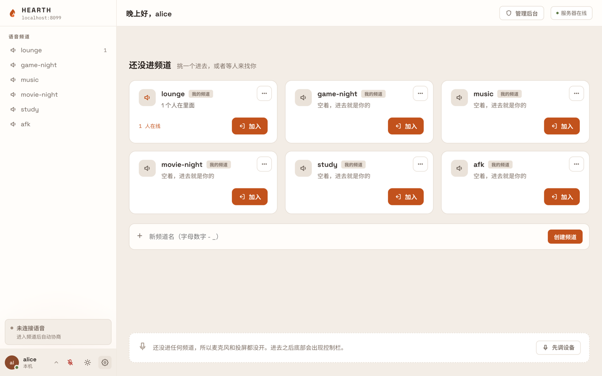
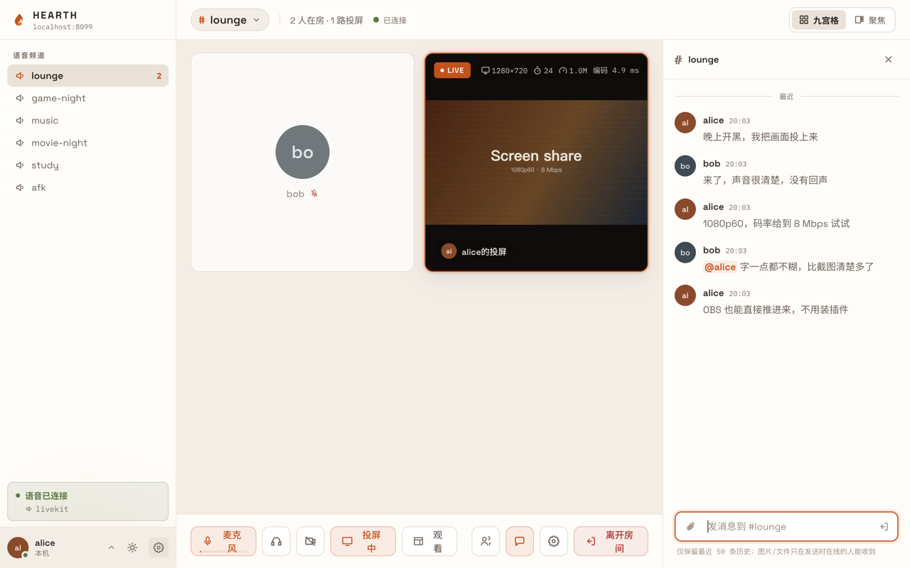
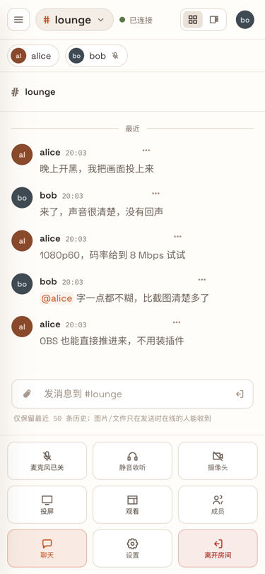

自己的语音房，自己的那台机器
Hearth 是一套自托管的语音 / 投屏 / OBS 推流 / 聊天房间：开一间频道，几个人进来说话，把画面投上去。
一个二进制文件就是全部：API、媒体内核、推流入口、前端都在里面。没有 redis，没有第二个容器，数据只落在你挂的那个目录里。



为什么要自己建一个
不是要做又一个大平台的替代品，是要一间自己说得上话的房间。
数据在你自己的机器上
账号、频道、聊天记录都在你挂的那一个目录里，随数据库一起备份。图片与文件的字节经内核扇出给当时在线的人，服务端从不落盘。
零外部依赖的单文件
下载、运行、打开浏览器。语音、投屏、OBS 推流开箱就能用，不需要另装媒体服务器、消息队列或转码器。
上行有限也能投屏
视频媒体不经服务端转发，走的是打洞出来的直连地址；服务端只做鉴权、信令与同源反代。上行吃紧时还能把舞台线整台搬到另一台机器。
能做什么
界面目前只有中文，英文界面在计划里。
进去就能说话
SFU 转发的多人语音，降噪与回声消除、按键说话、挂机自动静音、说话高亮与本地电平表；同一账号可以多设备同时在房。
高码率的画面
浏览器投屏带系统声音，编码三档（VP9 / AV1 分层与 H.264 单层），码率帧率分辨率可调，剧场模式、全屏与画中画。
OBS 直接推进来
标准 WHIP，不用装插件：服务器地址里写频道，令牌一人一把。服务端不转码原样透传，HEVC / AV1 也直通。
消息与文件同一条线
@、回复、表情反应，图片与文件直传不落盘；历史落库可回放，每人每频道可单独静音。
有人点名找你
页面开着响提示音，切到后台弹系统通知，页面关着时被 @ 与被回复走离线推送；未读数上标签页标题与应用角标。
通行密钥与角色阶梯
一次触摸即登录，密码始终是兜底；会话可远程下线。默认邀请制注册，访客链接可只放进指定频道，权限是五档系统角色加三档频道角色。
三个系统一个文件
Windows / macOS / Linux 单文件，可装成系统服务；docker 一个镜像到位。NAT 后自动申请端口映射，公网地址变了不重启、不断在途会话。
卡在哪一段看得见
每条线的 RTT、抖动、丢包与传输方式，收发两侧的缓冲与编码耗时，还有一把从采集到渲染的端到端延迟标尺。
三分钟部署
下面这段 compose 就是完整形态：没有别的容器要起。
起容器
保存下面的 compose 文件，docker compose up -d。数据与密钥都在 /data 卷里。
放行媒体端口
防火墙 / 安全组放行 47720/udp。UDP 被接管的网络还要在管理后台把「ICE-TCP 端口」设成同号，并放行 47720/tcp。
建第一个账号
docker compose exec hearth /app/hearth adduser <用户名> <密码>，第一个账号自动是超级管理员。
services:
hearth:
image: ghcr.io/xiaoshao9704/hearth:latest
restart: unless-stopped
ports:
- "8080:8080"
- "47720:47720/udp"
- "47720:47720/tcp"
volumes:
- hearth-data:/data
volumes:
hearth-data:放在 nginx / Caddy 后面时，把 Host 与 X-Forwarded-Proto 透传给 hearth 并允许 WebSocket 升级——通行密钥与离线推送都靠这两个头推导站点身份。媒体端口不经反代，直接放行到宿主。
裸机单文件、把舞台线搬到另一台机器、接官方 LiveKit、配置键与环境变量清单，都在 README 里。